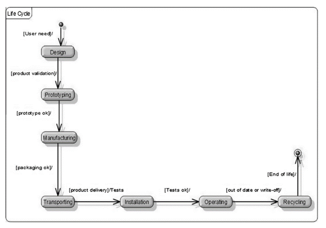
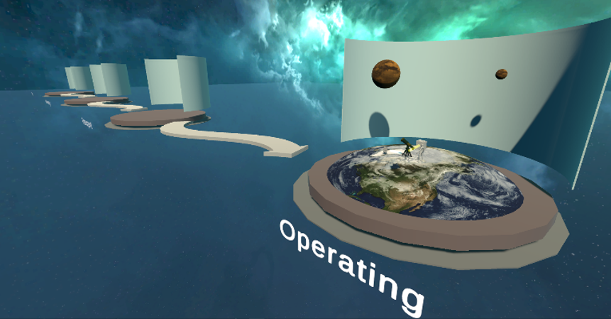
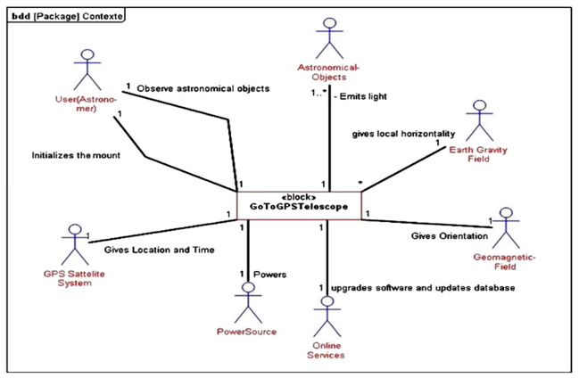
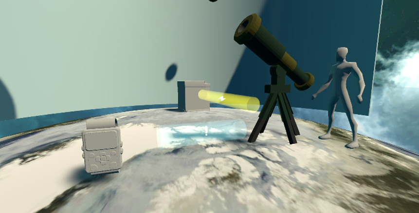

[Context] Systems architecture is a collaborative preliminary design process that consists in defining the multiple views (operational, functional, logical, physical, geometric, safety, etc.) of a system-of-interest. [Problem]The architecture of technical systems requires an extensive number of modelling and simulation software capabilites to define each view. So far, each view relies on a set of models developed in domain specific software. [Proposition] The project ArchiTOOL aims at inventing and prototyping an immersive and intelligent virtual environment for the architecture of complex socio-technical systems. New visual and interactive metaphors support the design of a multi-view architecture in a unique virtual space. The systems thinking ontology, which underlies the human-machine interface, structures the core information in a graph. Finally, the integration of reasoning and machine learning capabilities into the virtual environment provides users with context-aware virtual scenes.[Results] .... [Future work]...
| SysML | ArchiTOOL | |
|---|---|---|
| Lifecycle |  |  |
| Stakeholders |  |  |
| Create shape | Move shape | Resize shape |
|---|---|---|
|
|
|